전산응용토목제도기능사 (2002-10-06 기출문제)
1과목: 토목제도(CAD)
1. 최대 휨모멘트가 일어나는 단면에서 1방향슬래브의 정철근 및 부철근의 중심간격 설명으로 옳은 것은?
- 슬래브두께의 2배이하, 또는 30cm이하
- 슬래브두께의 2배이하, 또는 40cm이하
- 슬래브두께의 3배이하, 또는 30cm이하
- 슬래브두께의 3배이하, 또는 40cm이하
(정답률: 70%)

2. 인장력을 받는 D25 철근을 겹침이음할 때 A급이음이라면 겹침이음 길이는 얼마인가? (단, 기본정착길이 ℓd=50cm이며 수정계수는 없다.)
- 36cm
- 50cm
- 70cm
- 88cm
(정답률: 60%)
3. 압축과 인장을 받는 이형철근의 정착길이는 다음의 무엇과 반비례 하는가?
- 콘크리트 설계기준 강도의 평방근
- 철근 1개의 단면적
- 철근의 항복점 강도
- 철근의 공칭 지름
(정답률: 41%)
4. 구조물 시공시에 철근을 묶어 다발로 쓸 때 철근다발의 피복두께는 다음 어느 값 이상이어야 하는가?
- 철근다발의 등가지름
- 굵은골재의 최대치수
- 단면의 최대치수
- 단면의 최소치수
(정답률: 46%)
5. 보의 주철근의 수평 순간격은 최소 얼마이상인가?
- 2.5cm 이상
- 3.5cm 이상
- 4.5cm 이상
- 5.5cm 이상
(정답률: 70%)
6. 주철근의 90° 표준갈고리는 90°구부린 끝에서 철근지름의 몇배이상 연장해야 하는가?
- 4배
- 6배
- 8배
- 12배
(정답률: 57%)
7. 접합부 모서리 부분의 외측에 연하는 철근의 구부림 내면 반지름으로 알맞은 것은?
- 철근지름의 최소 10배이상
- 철근지름의 최소 5배이상
- 철근지름의 최소 12배이상
- 철근지름의 최소 6배이상
(정답률: 33%)
8. 압축 철근의 겹침이음에서 콘크리트 설계 기준 강도가 210kgf/cm2 미만인 경우에 겹침이음 길이는 규정된 길이보다 얼마나 증가시켜야 하는가?
- 1/2 증가
- 1/3 증가
- 1/4 증가
- 1/5 증가
(정답률: 44%)
9. D22 이형철근으로 135° 표준갈고리를 제작할 때, 135° 구부린 끝에서 최소 얼마 이상 더 연장하여야 하는가? (단, db는 철근의 지름이다.)
- 6db
- 9db
- 12db
- 15db
(정답률: 50%)
10. 철근의 단부를 콘크리트에 효과적으로 정착시키는 방법으로 효율성이 가장 떨어지는 방법은?
- 묻힘길이를 증대시킨다.
- 갈고리를 만든다.
- 이형철근을 사용한다.
- 약간 녹슨 철근을 사용한다.
(정답률: 81%)
11. 흙에 접하거나 외기에 노출되는 콘크리트로 D29 이상의 철근의 경우 최소 피복 두께는 얼마인가? (단, 현장치기 콘크리트의 경우임)
- 2㎝
- 4㎝
- 6㎝
- 8㎝
(정답률: 43%)
12. 강도 설계법의 기본가정 중 콘크리트의 압축 연단에서 이용할 수 있는 최대 변형률은 얼마인가?
- 0.001
- 0.003
- 0.01
- 0.03
(정답률: 84%)
13. 단철근 직사각형보를 강도 설계법으로 설계하고자 한다. 기본 가정이 틀린 것은?
- 보에 휨을 받기전에 생각한 임의의 단면은 휨을 받아 변형을 일으킨 뒤에도 그대로 평면을 유지한다.
- 항복강도에 해당하는 변형률보다 큰 변형률에 대해서 도 철근의 응력은 그 변형률에 관계 없이 항복강도와 같다.
- 보의 극한 상태에서의 휨 모멘트를 계산할 때에는 콘크리트의 압축강도는 무시한다.
- 철근과 콘크리트 사이의 부착은 완전하며, 그 경계면에서의 활동은 일어나지 않는다.
(정답률: 64%)
14. 단철근 직사각형 보를 안전하게 설계하기 위한 조건으로 최대 철근비는 균형 철근비의 몇 %이하로 규정하고 있는가?
- 50%
- 65%
- 75%
- 90%
(정답률: 54%)
15. 고정 하중 2tonf/ｍ, 활 하중 3tonf/ｍ를 지지해야 할 경간 5ｍ의 단순보를 단철근 직사각형 보로 설계하려고 한다. 이 보의 구조계산에 적용되는 하중은 얼마인가?
- 6.9tonf/ｍ
- 7.9tonf/ｍ
- 8.9tonf/ｍ
- 9.9tonf/ｍ
(정답률: 46%)
16. 철근 콘크리트가 구조 재료로 널리 이용되는 이유로 틀린 것은?
- 철근과 콘크리트의 부착력이 좋다.
- 콘크리트 속의 철근은 녹이 슬지 않는다.
- 철근과 콘크리트의 탄성계수가 거의 같다.
- 철근과 콘크리트의 온도에 대한 선팽창계수가 거의 같다.
(정답률: 57%)
17. 구조 재료로서 강재의 특징으로 올바른 것은?
- 재료의 균질성이 떨어진다.
- 부재를 개수하거나 보강하기 어렵다.
- 차량 통행에 의하여 소음이 발생하기 쉽다.
- 강 구조물을 사전 제작하여 조립이 힘들다.
(정답률: 77%)
18. 토목 구조물의 종류에서 강재의 보 위에 철근 콘크리트 슬래브를 이어 쳐서 양자가 일체로 작용하도록 하는 구조는 어느 것인가?
- 합성 구조
- 무근 콘크리트 구조
- 철근 콘크리트 구조
- 프리스트레스트 구조
(정답률: 55%)
19. 강재에서 고장력 볼트의 구멍은 볼트의 호칭지름에 얼마의 값을 더 하는가?
- 2 ㎜
- 3 ㎜
- 5 ㎜
- 6 ㎜
(정답률: 49%)
20. 사용 재료에 따른 교량의 분류가 아닌 것은?
- 철근 콘크리트교
- 강교
- 목교
- 거더교
(정답률: 72%)
2과목: 철근콘크리트
21. 다음은 아치교에 대한 설명이다. 옳지 않는 것은?
- 상부구조의 주체가 아치(arch)로 된 교량을 말한다.
- 계곡이나 지간이 긴 곳에 적당하다.
- 미관이 아름답다.
- 우리 나라의 대표적인 아치교는 서해대교이다.
(정답률: 79%)
22. 1방향 슬래브에서 배력 철근을 배치하는 이유로서 옳지 않은 것은?
- 응력을 고르게 분포시키기 위하여
- 주철근의 간격을 유지시켜 주기 위하여
- 콘크리트의 건조수축이나 온도 변화에 의한 수축을 감소시키기 위하여
- 슬래브의 두께를 얇게하기 위하여
(정답률: 68%)
23. 다음 중 강구조의 강재 이음 방법이 아닌 것은?
- 겹침 이음
- 용접 이음
- 고장력 볼트 이음
- 리벳 이음
(정답률: 35%)
24. 1등교를 설계할 때 DB-24를 적용한다. 이 때 총 중량은?
- 13.5 tf
- 24.3 tf
- 32.4 tf
- 43.2 tf
(정답률: 32%)
25. 옹벽의 전도에 대한 안정 조건에서 저항 모멘트가 회전 모멘트의 최소 몇 배 이상이 되도록 설계 기준에서 요구하고 있는가?
- 2배
- 2.5배
- 3배
- 4배
(정답률: 45%)
26. 교량 설계에 있어서 반드시 고려해야 하고 항상 장기적으로 작용하는 하중은?
- 주하중
- 부하중
- 특수 하중
- 충돌 하중
(정답률: 77%)
27. 구조용 강재나 강관을 축방향으로 보강한 기둥은?
- 띠철근 기둥
- 합성 기둥
- 나선 철근 기둥
- 복합 기둥
(정답률: 40%)
28. 2개 이상의 기둥을 1개의 확대 기초로 받치도록 만든 기초는?
- 독립 확대 기초
- 벽 확대 기초
- 연결 확대 기초
- 전면 기초
(정답률: 70%)
29. 설계 하중에 있어서 원심 하중은 교면상 얼마정도의 높이에서 수평방향으로 작용하는 것으로 보는가?
- 1.0m
- 1.3m
- 1.8m
- 2.3m
(정답률: 51%)
30. 토목 구조물에 대한 설계의 절차에 있어서 가장 먼저 해야 하는 것은?
- 재료의 선정
- 응력의 결정
- 하중의 결정
- 사용성의 검토
(정답률: 51%)
31. 도면에 사용되는 글자에 대한 설명 중 틀린 것은?
- 문장은 가로 왼쪽부터 쓰는 것을 원칙으로 한다.
- 글자의 크기는 높이로 나타내며, 6종류를 표준으로 한다.
- 글자체는 고딕체를, 숫자는 아라비아 숫자를 원칙으로 한다.
- 글자는 수직 또는 수직에서 35虔오른쪽으로 경사지게 쓴다.
(정답률: 83%)
32. 다음 중 단면도의 절단면을 나타내는 선은?
- 해칭선
- 절단선
- 피치선
- 파단선
(정답률: 52%)
33. 선의 접속과 교차 방법이 틀린 것은?
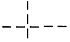
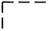
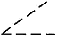
(정답률: 78%)
34. 건설재료의 단면 경계 표시 기호 중 지반면(흙)을 나타내는 것은?
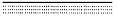
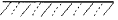
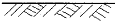
(정답률: 85%)
35. 중앙처리장치와 주기억장치 사이에서 실행 속도를 높이기 위해 사용되는 접근속도가 빠른 기억 장치는?
- 캐시 메모리(Cache Memory)
- DRAM(Dynamic RAM)
- SRAM(Static RAM)
- ROM(Read Only Memory)
(정답률: 64%)
36. 도면의 번호, 도면의 이름, 도면의 작성일 제도자의 이름 등을 기입하는 곳으로 일반적으로 도면의 아래쪽에 배치하는 것은?
- 중심마크
- 표제란
- 윤곽선
- 재단마크
(정답률: 89%)
37. 윤곽선은 도면의 크기에 따라 몇 ㎜ 이상의 굵기인 실선으로 긋는가?
- 0.1㎜
- 0.3㎜
- 0.4㎜
- 0.5㎜
(정답률: 74%)
38. 다음 중 콘크리트 단면을 표시 한 것은?
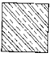
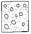
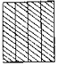
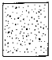
(정답률: 82%)
39. 콘크리트 일반도는 구조물 전체의 개략적인 모양을 표시하는 도면으로 이 때 사용하는 축척 표준이 아닌 것은?
- 1/100
- 1/400
- 1/600
- 1/1200
(정답률: 55%)
40. 도면 이름 문자인 경우 문자의 높이로 적당한 것은?
- 2.24∼4.5㎜
- 9∼18㎜
- 9∼12.5㎜
- 6.3∼12.5㎜
(정답률: 53%)
3과목: 토목일반구조
41. 치수 보조선은 치수선을 지나 얼마를 더 연장하는가?
- 1∼2㎜
- 2∼3㎜
- 3∼5㎜
- 5∼6㎜
(정답률: 59%)
42. 지시선은 수평선에 대해서 몇 도의 각도를 가지는 직선으로 긋는가?
- 30°
- 45°
- 60°
- 75°
(정답률: 28%)
43. 콘크리트 구조물 제도에서 구조물 전체의 개략적인 모양을 표시한 도면은?
- 일반도
- 구조도
- 상세도
- 구조 일반도
(정답률: 50%)
44. 많은 치수선을 평행하게 그을 때에는 치수선간의 간격이 얼마의 같은 간격이 되도록 하는가?
- 5∼6㎜
- 7∼8㎜
- 8∼10㎜
- 10∼12㎜
(정답률: 49%)
45. Windows와 같이 사용자가 그래픽으로 컴퓨터와 대화하는 방식을 영어 약어로 무엇이라 하는가?
- OS
- OA
- CAI
- GUI
(정답률: 41%)
46. 투시도에 사용되는 기호의 연결이 틀린 것은?
- P.P. - 화면
- G.P. - 기면
- H.L. - 수평선
- V.P. - 시점
(정답률: 42%)
47. 제3각법으로 도면을 작성할 때 투상도, 물체, 눈의 위치로 바른 것은?
- 투상도→눈→물체
- 투상도→물체→눈
- 눈→물체→투상도
- 눈→투상도→물체
(정답률: 66%)
48. 다음 그림처럼 나타내는 투상법은?
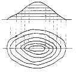
- 정투상법
- 표고 투상법
- 축측 투상법
- 사투상법
(정답률: 79%)
49. 콘크리트 구조물 제도에 있어서 거푸집을 제작할 수 있도록 구조물의 모양 치수를 모두 표시한 도면은?
- 일반도
- 구조 일반도
- 구조도
- 상세도
(정답률: 53%)
50. 그림은 평면도상에서 지형의 어떠한 상태를 나타내는 것인가?
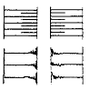
- 절토면
- 성토면
- 수준면
- 물매면
(정답률: 78%)
51. 그림은 콘크리트 구조물의 제도에서 어떤 철근 배근을 나타낸 것인가?
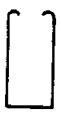
- 절곡 철근
- 스터럽
- 티 철근
- 나선 철근
(정답률: 69%)
52. 도면의 보관을 위해 흔히 사용하는 마이크로 필름은 보관장소를 많이 차지하지 않으며, 도면의 확대 및 축소를 임의로 할 수 있으므로 편리하여 많이 사용되는데 일반적으로 사용하는 마이크로 사진용 필름의 나비는 얼마인가?
- 25㎜
- 35㎜
- 40㎜
- 55㎜
(정답률: 34%)
53. CAD 시스템의 입력 장치가 아닌 것은?
- 마우스
- 키보드
- 플로터
- 펜마우스
(정답률: 80%)
54. 다음 그림과 같이 나타내는 정투상법은?
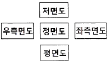
- 제1각법
- 제2각법
- 제3각법
- 제4각법
(정답률: 64%)
55. 자료의 크기 단위를 작은 것부터 바르게 나열한 것은?
- byte < word <bit
- byte < bit <word
- bit < byte < word
- bit < word < byte
(정답률: 63%)
56. 화살표의 길이(a)와 나비(b)의 비로 적당한 것은?
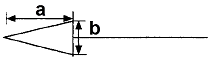
- 1 : 1
- 2 : 1
- 3 : 1
- 4 : 1
(정답률: 54%)
57. 이점쇄선인 선으로 표시하는 것은?
- 중심선
- 기준선
- 피치선
- 가상선
(정답률: 55%)
58. 주로 토목이나 건축에서 현장의 겨냥도, 구조물의 조감도 등에 쓰이는 방법은?
- 축투상도법
- 투시도법
- 사투상도법
- 정투상도법
(정답률: 41%)
59. 원도를 그리는 순서 중 옳은 것은?
- 도면의 구성→선긋기→도면배치→글자 및 기호쓰기→도면검토
- 도면의 구성→도면배치→선긋기→글자 및 기호쓰기→도면검토
- 도면의 구성→글자 및 기호쓰기 →선긋기→도면배치→도면검토
- 도면배치→도면의 구성→선긋기→글자 및 기호쓰기→도면검토
(정답률: 66%)
60. 강 구조물의 일반도 축척의 표준으로 적당하지 않은 것은?
- 1/100
- 1/200
- 1/300
- 1/500
(정답률: 52%)
하지만 너무 중심간격을 좁게 가져가면 철근간의 충돌이 발생하거나 콘크리트의 가공이 어려워지는 등의 문제가 발생할 수 있습니다. 따라서 적절한 중심간격을 결정하기 위해서는 슬래브두께와 중심간격의 비율을 고려해야 합니다.
보기 중에서 "슬래브두께의 2배이하, 또는 30cm이하"가 옳은 이유는 다음과 같습니다. 슬래브두께의 2배 이하로 중심간격을 가져가면 충돌이나 가공 문제가 발생하지 않으면서도 휨모멘트를 견딜 수 있는 철근의 양을 충분히 확보할 수 있습니다. 또한 30cm 이하로 중심간격을 가져가면 철근의 경제성과 가공성을 고려한 적절한 범위 내에서 휨모멘트를 견딜 수 있습니다. 따라서 "슬래브두께의 2배이하, 또는 30cm이하"가 옳은 답입니다.